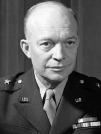

Dwight D Eisenhower
Created DARPA to sort out and organize competing American missile and space projects and to delineate boundaries separating military from civilian space research.
Created DARPA to sort out and organize competing American missile and space projects and to delineate boundaries separating military from civilian space research.
He invented packet switching techniques that can be credited with playing a key role in the development of the Internet.
Steve Wozniak is an American pioneer of the personal computer revolution of the 1970s, and the mind behind Apple's first computer. As an inventor, electronics engineer, and computer programmer, Wozniak invented the Apple I computer in partnership with Steve Jobs.
Al Gore is a former US Senator who served as the Vice President of the United States from 1993 to 2001. In the 1980s and 1990s, he promoted legislation that funded an expansion of the ARPANET, allowing greater public access, and helping to develop the Internet.
Tim Berners-Lee invented the World Wide Web, an Internet-based hypermedia initiative for global information sharing while at CERN, the European Particle Physics Laboratory. He wrote the first web client and server in 1990. His specifications of URIs, HTTP and HTML were refined as web technology spread.
Metcalfe helped pioneer the Internet. In 1973, at the Xerox Palo Alto Research Center, he invented Ethernet, the local-area networking (LAN) standard Internet plumbing also invented Ethernet.